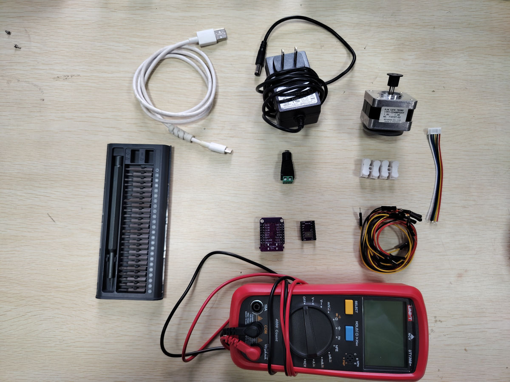
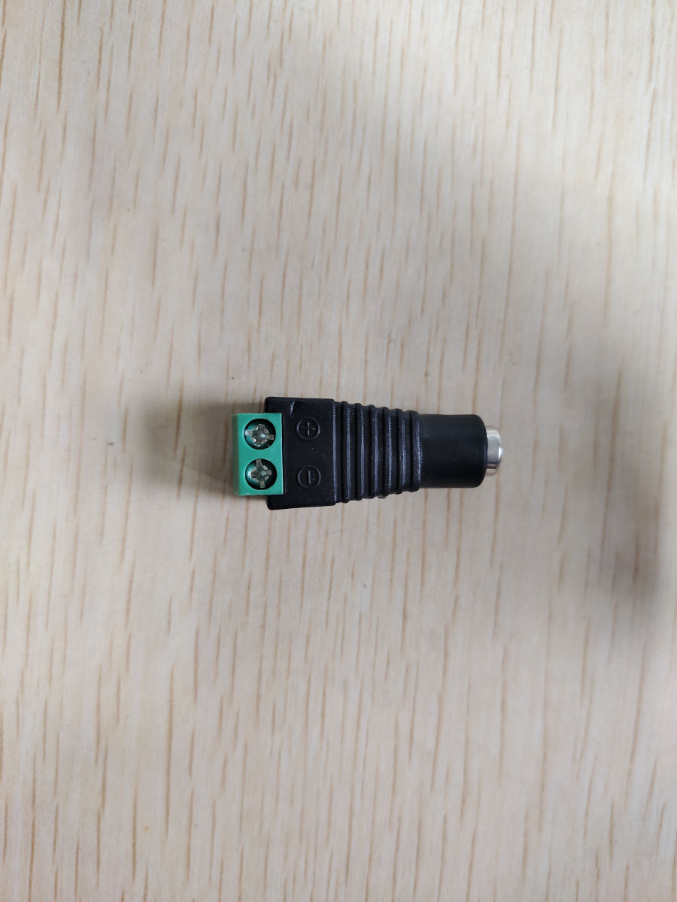
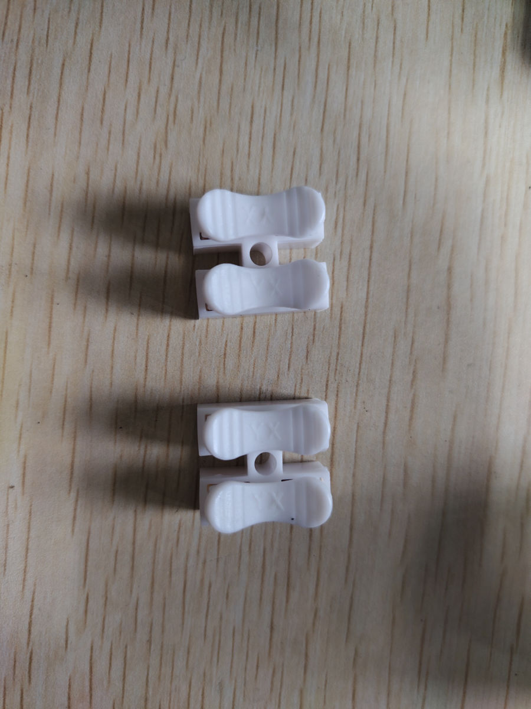
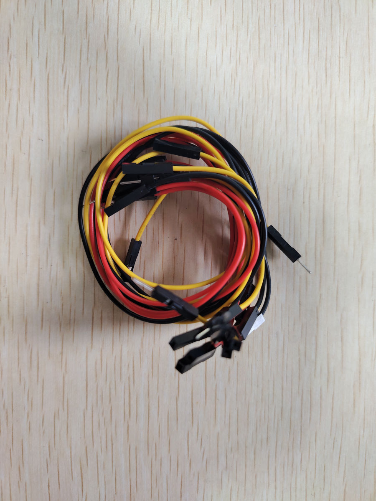
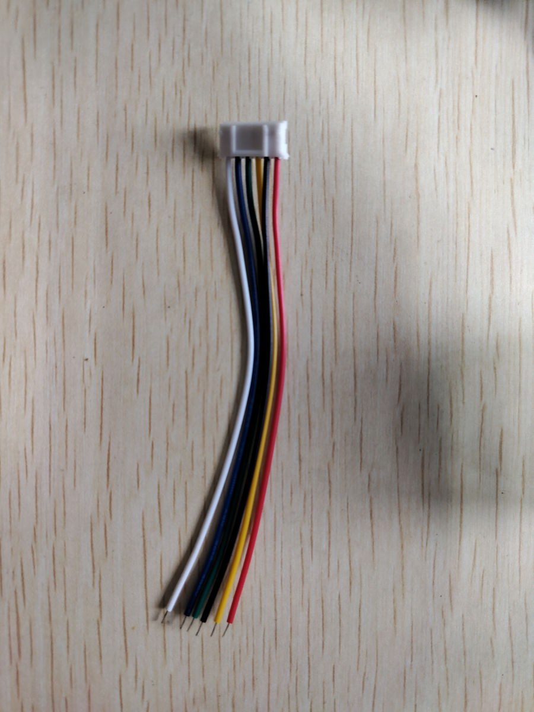
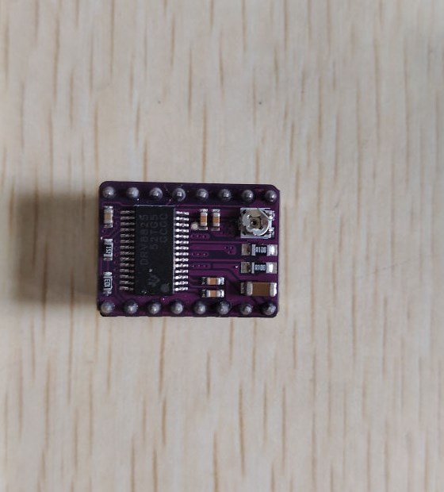
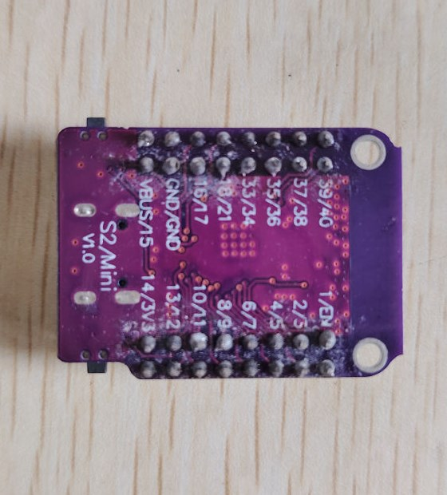
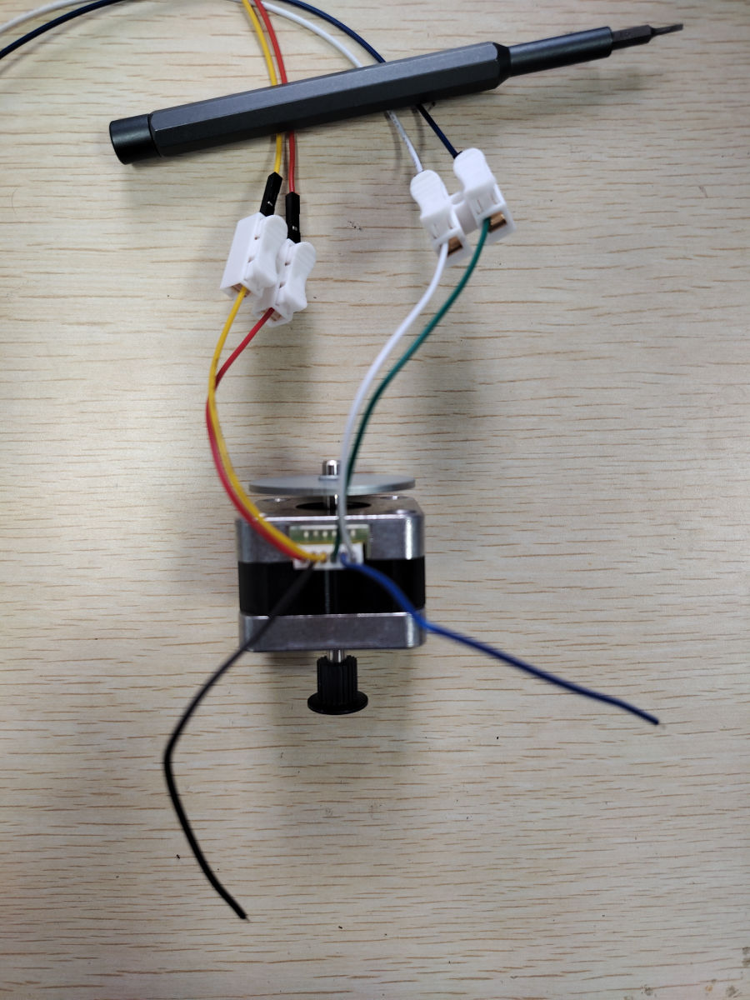
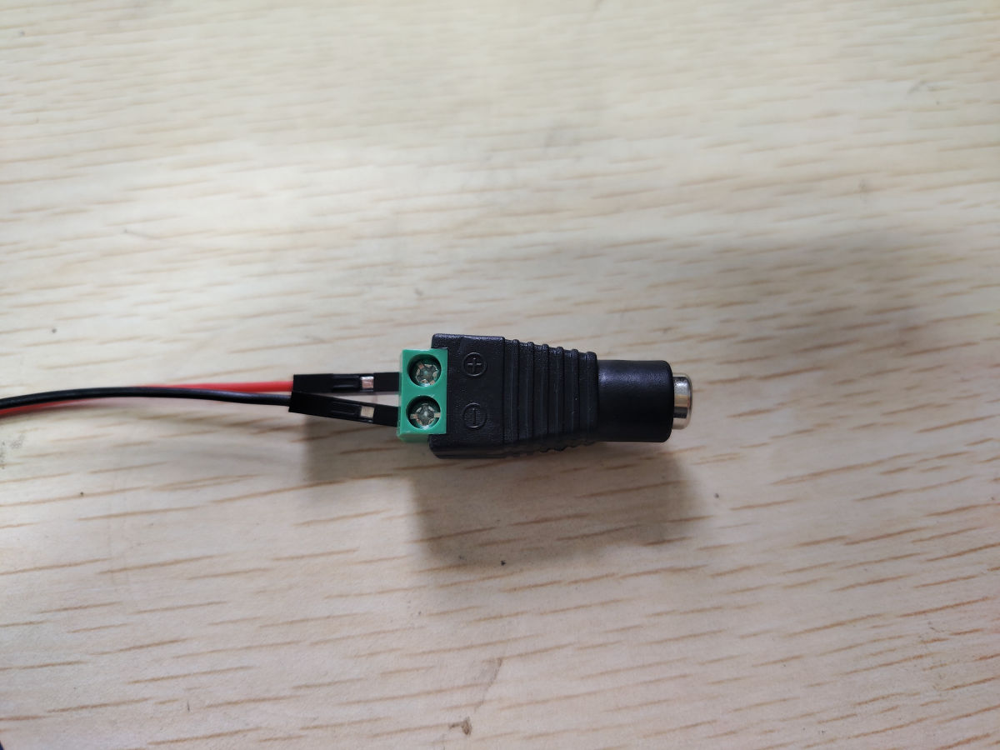
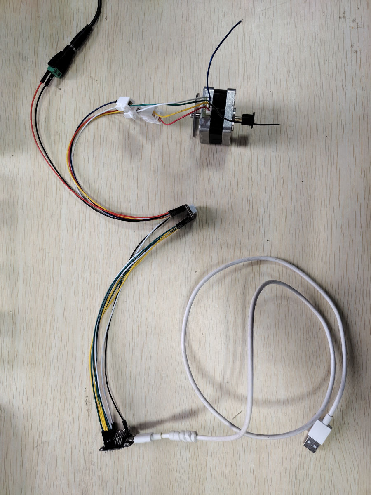

让电机转起来
ESP32-S2 + DRV8825 步进电机入门工作坊。今天我们要亲手让一台真实的 步进电机，按照自己写的程序转起来——3D 打印机、雕刻机、贴标机、相机滑轨， 核心都是「步进电机 + 驱动器 + 一块会发脉冲的主控板」，你今天搭的就是它们的最小原型。
01目标与流程
这不是演示课。每个人都要自己完成接线、量电压、调电流和烧录， 最后让电机按程序正转一圈、反转一圈。
完成本工作坊后，你将能够
- 认出套件里每个部件是干什么的，并正确地把它们连起来；
- 会用万用表找到步进电机的两组线圈，不再靠猜线序；
- 理解并亲手设定驱动器的限流（Vref），知道为什么不能乱拧；
- 烧录第一段程序，让电机正转一圈、反转一圈。
动手实操 + 排错挑战。成果标准：电机按程序正反转，芯片温度正常，接线可以经得起复盘。
90 分钟流程
| 时间 | 环节 | 你做什么 |
|---|---|---|
| 10 分钟 | 开场 + 安全须知 | 听讲，阅读第 02 节 |
| 15 分钟 | 认识部件 + 贴散热片 | 对照第 03、05 节动手 |
| 20 分钟 | 找线圈 + 接线 | 第 06、07 节，逐线核对 |
| 15 分钟 | 通电三查 + 定电流 | 第 08 节，量电压、调 Vref |
| 20 分钟 | 烧录程序 | 第 09 节，让电机转起来 |
| 10 分钟 | 排错挑战 + 总结 | 对照第 11 节 |
02安全第一（必读）
这套器材的电压只有 12V，属于安全电压，不会电伤人。但下面四条规则必须像 交通规则一样遵守——违反它们烧掉的不是元件，而是你的整个下午。
电机线、电源线、杜邦线，全部一样。带电插拔产生的电压尖峰，一瞬间就能击穿 驱动芯片。要动线，先拔掉 12V 电源。
VMOT 接红（+）、GND 接黑（−），接反的一瞬间模块报废。接完电源线后， 先举手让讲师检查，再通电。
螺丝刀、镊子、剪掉的引脚，掉在板上就是短路。工具用完随手放回桌面边缘之外。
驱动器工作时发热是正常的，但如果烫到不敢碰，说明电流设定过大或散热不足。 此时芯片内部的过热保护正在反复关断输出——先降温，别硬跑。
本工作坊全部用 12V 供电。真正的工业现场用的是 24V 甚至更高电压的驱动器， 安全规范更严格，但「先断电、再动线、正负极核对」这三条在任何电压下都一样。
03材料与工具
下表是你桌上应该有的全部东西。开课前先逐一清点，缺什么立刻举手。

| 物品 | 数量 | 作用 | 注意 |
|---|---|---|---|
| 42 步进电机 | 1 | 执行器，今天的主角，4 根线两组线圈 | 线有插头，不要硬拽 |
| DRV8825 驱动模块 | 1 | 把弱电信号变成能推动电机的强电，附散热片 | 静电敏感，捏边缘不捏芯片 |
| Lolin S2 mini（ESP32-S2） | 1 | 主控板，发脉冲信号的大脑 | 排针方向以板上丝印为准 |
| 12V 开关电源 | 1 | 给电机供电的动力来源 | 输出正负极看标签，别接反 |
| DC 接头（母头） | 1 | 接在电源输出上，引出红黑两根线 | 红 = +12V，黑 = GND |
| 2 位对接端子 | 2 | 把 DC 接头的导线转接成杜邦线 | 压线前确认顶紧 |
| 杜邦线（公公 / 公母） | 若干 | 所有信号与电源连接 | 颜色建议：红正黑负，其余随意 |
| 万用表 | 1 | 找线圈、量电压、定电流，今天的第二主角 | 用前确认档位 |
| 精密螺丝刀 | 1 | 拧 Vref 电位器、拆装 | 金属杆通电时勿横放板上 |
| 笔记本电脑 + TypeC 数据线 | 1 | 写程序、烧录、看串口输出 | 必须用数据线，不能是纯充电线 |




100µF / 25V 电解电容每桌 1 个。DRV8825 模块的输入端用的是陶瓷电容， 电源线一长就容易产生超过 45V 的电压尖峰，直接击穿芯片。工作坊阶段先不接， 由讲师统一保管，留作第 12 节进阶任务；在不接电容的情况下，请严格遵守 「通电不插拔电源线」。
04认识核心部件
4.1 42 步进电机 —— 分秒不差的「铁腿」
名字里的 42 指机座宽 42mm。它不是连续旋转的普通马达，而是「走一步、停一步」： 每收到一个电脉冲，轴精确地转过 1.8°，转一圈恰好 200 步。它有 4 根线， 实际上是两组独立的线圈（A 组、B 组），驱动器轮流给两组通电，转子就一步步转起来。 今天的第一道动手题，就是用万用表把这两组找出来。


4.2 DRV8825 驱动模块 —— 翻译官兼放大器
ESP32 的引脚只能输出几毫安的弱电，直接接电机推不动它。DRV8825 干两件事： 把 STEP/DIR 这样的弱电信号翻译成给两组线圈供电的时序（专业名词叫「细分」）， 并用 12V 电源把电流放大到 1A 以上。它有 16 个引脚，先别慌，我们只用到其中 12 个。


三个新手最容易困惑的点，提前说清楚：
- 没有 VDD 引脚：这块模块内部自带 3.3V 稳压器，逻辑部分由 12V 自动供电，所以你不需要给它接第二路电源。
- 两个 GND 是相通的：电机地和逻辑地内部相连，任意一个接 ESP32 的 GND 就算共地。
- RST 和 SLP 必须拉高：这两个脚低电平时芯片内部整个复位、 所有输出关闭，而且不会报任何故障——这是新手「接线全对电机却不转」 的最常见原因，第 08 节会专门验证。
4.3 Lolin S2 mini（ESP32-S2）—— 发号施令的大脑
它是一块指甲盖大小的单片机开发板，插上 USB 就能编程。它的工作只有一个： 按程序设定的节奏，在 STEP 脚上发出一串脉冲、在 DIR 脚上给出方向电平， 其余 6 个脚负责配置驱动器。板子通过 TypeC 数据线连接电脑。


4.4 供电三件套 —— 12V 电源、DC 接头、对接端子
12V 开关电源是动力来源，输出端是一个 DC 圆孔。DC 接头（母头）插上去之后， 引出红（+12V）黑（GND）两根线。这两根线是「裸线」，没法直接插到模块的排针上 ——这就是两个 2 位对接端子的用处：把裸线和杜邦线在端子里对插压紧， 导线就从「裸头」变成了「可插拔的杜邦头」。另一个端子留作备用。
4.5 万用表与精密螺丝刀 —— 今天的第二主角
万用表今天承担三项任务：① 电阻/蜂鸣档找电机线圈；② 直流电压档确认 12V 和 Vref； ③ 排错时当「眼睛」。精密螺丝刀只干一件事：拧 DRV8825 上那颗小小的电流设定电位器 ——后面你会知道，这一拧直接决定电机转得顺不顺、芯片烫不烫。
05动手 0：贴散热片
DRV8825 芯片工作时发热量不小，裸板只能长期承受约 1A/相的电流。 模块附送的散热片必须在通电之前贴好——通电后再贴，芯片已经烫手了。

- 散热片贴在黑色芯片的正上方，背胶面朝芯片；
- 贴好后确认散热片没有碰到旁边任何一个元件或排针——金属散热片是导电的， 碰到就是短路；
- 撕下来的保护膜随手收进垃圾袋，别留在桌面上。
06动手 1：找到两组线圈
42 电机的 4 根线里，两两一组：A 组一对、B 组一对。 绝对不要靠颜色猜——不同厂家的颜色定义完全不同。 正确姿势是用万用表量出来，三分钟搞定。

- 万用表拨到电阻档（Ω）或蜂鸣档。红黑表笔任意接触电机的两根线，读数记下来。
- 换不同的两根组合再量，直到找到两对「导通」的组合： 读数在 1Ω～十几 Ω 之间（蜂鸣档会响）。42 电机的典型值在 1~10Ω 左右。
- 剩下那些「完全不导通（显示 OL 或超大阻值）」的组合说明两根线分属不同组， 永远不要把它们接进同一组输出。
- 把导通的两组做好标记（比如贴标签：A 组、B 组），分别对应接 DRV8825 的 A1/A2 和 B1/B2。
两组各自导通、组与组之间不导通。做到这一步，后面「电机嗡嗡响却不转」的 最大元凶就被你提前消灭了。
07动手 2：完成全部接线
先看整体，再按 7.1～7.5 逐步执行。全程断电操作——12V 电源此时不要插上。

7.1 电机 → 模块（4 根线）
第 06 节找到的 A 组两根线 → 模块 A1、A2； B 组两根线 → B1、B2。组内两根线哪个接 A1、 哪个接 A2 都行，只影响转向，不影响能不能转。
42 电机的白色插头间距与杜邦母头相同，可以直接对插，不需要对接端子。
7.2 电源 → 模块（2 根线）
- 把 DC 接头插到 12V 电源输出孔上（卡扣对准按到底）。
- DC 接头引出的红、黑两根线，分别与两根杜邦线在对接端子里对插压紧： 红出红（或按颜色习惯），黑出黑。
- 红杜邦线（公头端）插模块 VMOT，黑杜邦线插模块 旁边那个 GND（电源侧地）。

它的作用是吸收电源线上的电压尖峰、保护芯片（正确接法：长脚正极接 VMOT、 短脚接 GND，极性反了会鼓包炸裂）。为了给新手降低接线难度，工作坊阶段先跳过， 留作第 12 节的进阶任务。在补上电容之前请遵守一条纪律： 通电状态下绝不插拔 VMOT 电源线。
7.3 ESP32 → 模块（8 根控制线 + 共地）
按下面第 13 节的引脚表逐根连接：GPIO2→DIR、GPIO3→STEP、GPIO4→SLP、 GPIO5→RST、GPIO6→M2、GPIO7→M1、GPIO8→M0、GPIO9→EN。最后拿一根黑色杜邦线， 从 ESP32 的 GND 接到模块右侧的 GND——这根线叫「共地」， 少接它整个系统都不工作，因为电压是相对而言的，两边必须有同一个参考点。
7.4 特别关照：SLP 和 RST 这两个脚
DRV8825 的 SLP（睡眠）和 RST（复位）都是低电平有效： 只要其中一个被拉低或悬空，芯片内部整个关断，电机毫无反应、毫无力矩 ——而且这不算故障，FLT 脚依然是高电平，万用表量不出来。 这是新手「接线全对、电机死活不转」的头号原因。我们的程序会在开头把这两个脚拉高， 但你的物理连线必须真实可靠。
7.5 断电自查
全部打勾 → 举手请讲师复核 → 才可以进入第 08 节通电。
08通电调试：三查 + 定电流
8.1 通电前三查
- 查电源：12V 电源插上 220V，但先不碰任何杜邦线； 万用表直流电压档（20V 量程）量 DC 接头引线，应读到约 12V。
- 查共地：万用表蜂鸣档，一支表笔接 ESP32 的 GND， 另一支接模块 GND，应响。
- 查线圈：对照第 06 节的分组标记再确认一遍。
以上三查全部通过后，把 12V 电源接到模块 VMOT/GND，此时先不要接 ESP32 的 TypeC。 这是我们的「安全首通电」——只有驱动器和电源在工作，范围最小。
8.2 首通电检查
- 万用表直流 20V 档：红表笔 VMOT、黑表笔 GND，读数约 12V；
- 红表笔改接模块右侧 FLT 脚、黑表笔不动：读数应接近 3.3V（高电平 = 无故障，正常）；
- 手背轻碰散热片：微温属于正常（静止时芯片也在耗电），烫手立刻断电举手。

8.3 设定电流：拧 Vref（本工作坊最重要的一步）
DRV8825 是「恒流驱动」：它不看你给多大电压，而是把线圈电流死死按在设定值上。 设定值由那颗小电位器决定——出厂位置完全是随机的， 有的板子出厂就是 0V（电机纹丝不动），有的出厂接近满格（芯片烫手）。 所以每一块新板都必须重新标定。
这一步必须两人一组，分工如下：
- 测量员：先把黑表笔用鳄鱼夹夹死在任意一处 GND——模块上的 GND、 ESP32 的 GND、甚至直接夹到 DC 接头引出的黑线（−）上都可以，它们是同一个地。 夹好后整场不再碰它，然后负责把红表笔稳稳顶在电位器金属帽的边缘 （正中间的一字口留给螺丝刀），全程盯表并大声报数。
- 操作员：双手持精密螺丝刀，从金属帽正中的一字口进入， 每次只转约 1/16 圈，听到「停」立刻抬刀，等读数稳定再动。
- 纪律：表笔一旦滑到旁边的排针上就可能造成短路——宁可慢，不许抢。
- 万用表拨直流电压档（选 2V 或 20V 手动量程）。黑表笔接任意一处 GND， 用鳄鱼夹夹牢，之后整个标定过程不再碰它。
- 红表笔轻触电位器的金属调节帽——它内部连着滑动端，本身就是 Vref 测试点。
- 通电状态下，操作员用精密螺丝刀每次只转一点点，测量员等读数稳定后再报数。 把读数调到目标值附近（教学先设 0.5V；若电机铭牌是 1.5A，正式用可设 0.75V）。
- 把最终读数写在便签上贴到自己的板上：这是这块板的「身份证」， 换电机、换板子后要重新标定。
电位器行程很短，轻轻一动读数就会跳一大截，属于正常现象。诀窍：黑表笔夹牢后整场不动、 红表笔只顶在金属帽边缘、手动量程、每次微调后等一两秒再读。别追求精确到第三位小数 ——0.5V 和 0.55V 的区别你根本感觉不出来。
电机可以不接（更安全），但模块必须通着 12V 电——它的内部稳压器和参考电压全靠 VMOT 供电，断电时量到的永远是 0。
参考值：教学默认 0.5V ≈ 1.0A；常见 42 电机约 0.6V ≈ 1.2A；1.5A 电机的满额值是 0.75V。设定值永远从额定电流的 70% 起步，以「转 10 秒摸温度」为准。
09烧录第一个程序
9.1 把 ESP32 接进系统
现在用 TypeC 数据线把 Lolin S2 mini 连到电脑。接上后系统会认出一个新的串口设备 （Windows 显示为 COMx）。如果电脑没反应，多半是用了纯充电线，或者缺串口驱动——举手找讲师。
9.2 准备 Arduino IDE
- 从 arduino.cc 下载并安装 Arduino IDE 2。
-
文件 → 首选项 →「附加开发板管理器网址」填入：
https://espressif.github.io/arduino-esp32/package_esp32_index.json -
工具 → 开发板 → 开发板管理器，搜索
esp32，安装 esp32 by Espressif Systems（要下载几百 MB，耐心等进度条走完）。 - 工具 → 开发板 → esp32 → 选择 LOLIN S2 mini； 工具 → 端口，选择刚出现的 COM 口。
9.3 第一个程序：正转一圈，反转一圈
新建一个 sketch，整段替换成下面的代码，然后保存为一个全新的文件夹名
（例如 MyFirstStepper）。Arduino 会把同名文件夹里的多个 .ino 自动合并，
所以每个练习都开新文件夹是个好习惯。
/* 第一个步进电机程序：全步进，正转一圈、反转一圈
核心思想：STEP 脚每来一个上升沿，电机就走一步。
接线：DIR=2 STEP=3 SLP=4 RST=5 M2=6 M1=7 M0=8 EN=9 */
#define DIR_PIN 2 // 方向脚：高=顺时针，低=逆时针
#define STEP_PIN 3 // 步进脚：每个上升沿走一步，速度由脉冲快慢决定
#define SLEEP_PIN 4 // 睡眠控制：必须拉高；拉低=输出全关（还不报错！）
#define RESET_PIN 5 // 复位控制：必须拉高；拉低=输出全关（还不报错！）
#define M2_PIN 6 // ┐ 细分选择三兄弟：全低 = 全步进（200 步/圈），
#define M1_PIN 7 // │ 高低组合决定细分倍数，
#define M0_PIN 8 // ┘ 9.4 节的改进版会用到它们
#define EN_PIN 9 // 使能脚：低=输出打开，高=输出关闭（电机失去力）
const int stepsPerRevolution = 200; // 全步进一圈 = 200 步（1.8° × 200 = 360°）
void setup() {
Serial.begin(115200); // 打开串口，方便在监视器里看进度
// 8 个引脚全部设为输出
pinMode(STEP_PIN, OUTPUT);
pinMode(DIR_PIN, OUTPUT);
pinMode(SLEEP_PIN, OUTPUT);
pinMode(RESET_PIN, OUTPUT);
pinMode(M2_PIN, OUTPUT);
pinMode(M1_PIN, OUTPUT);
pinMode(M0_PIN, OUTPUT);
pinMode(EN_PIN, OUTPUT);
// 打开驱动器的三个开关：这三个脚弄错，电机纹丝不动还不报错
digitalWrite(SLEEP_PIN, HIGH); // SLP 低电平 = 睡眠，输出全关
digitalWrite(RESET_PIN, HIGH); // RST 低电平 = 复位，输出全关
digitalWrite(EN_PIN, LOW); // EN 低电平 = 使能输出
// M0/M1/M2 全低 = 全步进模式（一圈 200 步）
digitalWrite(M0_PIN, LOW);
digitalWrite(M1_PIN, LOW);
digitalWrite(M2_PIN, LOW);
digitalWrite(STEP_PIN, LOW); // STEP 脚先保持在低电平
}
void loop() {
digitalWrite(DIR_PIN, HIGH); // ① 方向 = 顺时针
Serial.println("Spin CW...");
// ② 连发 200 个脉冲 = 走 200 步 = 正好一圈
for (int i = 0; i < stepsPerRevolution; i++) {
digitalWrite(STEP_PIN, HIGH); // 上升沿！转子走一步
delayMicroseconds(2000); // 保持 2ms（脉冲宽度，太窄驱动器可能认不出）
digitalWrite(STEP_PIN, LOW); // 拉低，为下一个脉冲做准备
delayMicroseconds(2000); // 再等 2ms → 每步共 4ms
}
delay(1000); // ③ 停 1 秒（输出仍通电：有保持力矩）
digitalWrite(DIR_PIN, LOW); // 换方向 = 逆时针，再来一圈
Serial.println("Spin CCW...");
for (int i = 0; i < stepsPerRevolution; i++) {
digitalWrite(STEP_PIN, HIGH);
delayMicroseconds(2000);
digitalWrite(STEP_PIN, LOW);
delayMicroseconds(2000);
}
delay(1000);
}① 一个脉冲 = 一步：STEP 脚从 LOW 变 HIGH 的瞬间，转子就走一步。 ② DIR 决定方向：DIR 高电平顺时针、低电平逆时针，只在换向时改一次。 ③ SLP / RST / EN 是三个开关：SLP 和 RST 必须拉高（拉低 = 睡眠/复位， 输出全关且不报错），EN 拉低才打开输出；M0/M1/M2 是细分选择，全低 = 全步进。
速度由 delayMicroseconds(2000) 决定：一个脉冲周期 = 2000 + 2000 = 4000µs，
200 步 × 4ms ≈ 0.8 秒一圈（约 75 rpm）。想快就把数字改小——但改太小电机来不及走，
会「丢步」反而抖。
- 点击左上角「→」上传按钮。第一次编译较慢。
- 如果报「找不到端口」或上传失败：按住板上的 BOOT 键再点上传， 出现进度后松开。
- 上传成功后，打开串口监视器（右上角放大镜图标），波特率选 115200，按下板上复位键 RST 重新启动程序。
这个程序故意写得最简单，方便你看懂「脉冲 → 步进」的本质，但它有一个明显的副作用： 噪音和抖动比较大。全步进模式下每一步都是一次「猛吸」式的机械冲击，75 rpm 的步频 正好让这些冲击连成明显的「嗒嗒」声，甚至引发共振。下一步我们用改进版把它治好。
9.4 体验任务：换上「平滑版」程序
改进版把三招一起用上，接线一根都不用改：
- 提高细分：M2 拉高切到 1/16 细分，一圈 200 步变 3200 步—— 一次大冲击被拆成 16 次小冲击，声音从「嗒嗒」变成几乎听不见的「沙沙」； 同时约 47 rpm 的运行速度避开了 10~20 rpm 的中频共振区。
- 缓启缓停：起步 200 步渐快、停止 200 步渐慢，消除起步和换向的「哐当」顿挫。
- 静止降流：停顿时拉高 EN 关闭输出，电机和芯片都休息（代价：停顿时失去保持力矩）。
新建一个 sketch 文件夹（例如 MySmoothStepper），整段替换成下面的代码上传：
/* 改进版：平滑步进 —— 高细分 + 缓启缓停 + 静止降流
接线与第一个程序完全相同，一根线都不用改！
三处变化：
① M2 = HIGH：1/16 细分，一圈从 200 步变成 3200 步
② 起步 / 停止各用 200 步做「渐快 / 渐慢」坡道
③ 停顿时拉高 EN 关闭输出，电机和芯片都休息 */
// ---------- 引脚定义（与第一个程序完全一致） ----------
#define DIR_PIN 2 // 方向脚
#define STEP_PIN 3 // 步进脚：每个上升沿走一步
#define SLEEP_PIN 4 // 睡眠控制，必须拉高
#define RESET_PIN 5 // 复位控制，必须拉高
#define M2_PIN 6 // ┐
#define M1_PIN 7 // ├ 细分选择：M2=1、M1=0、M0=0 → 1/16 细分
#define M0_PIN 8 // ┘
#define EN_PIN 9 // 使能：低=输出开，高=输出关
// ---------- 运动参数（想调速度 / 平顺度就动这三行） ----------
#define STEPS_PER_REV 3200 // 一圈的步数：1/16 细分 = 200 × 16。改细分数必须同步改这里！
#define HALF_US_MIN 200 // 全速时半步间隔(µs)：200+200 = 400µs/步 ≈ 47rpm，避开共振区
#define RAMP_STEPS 200 // 起步和停止各用多少步完成渐变
// 生成一个 STEP 脉冲：us 是高、低电平各占的时间
void stepPulse(int us) {
digitalWrite(STEP_PIN, HIGH); // 上升沿 = 走一步
delayMicroseconds(us);
digitalWrite(STEP_PIN, LOW); // 拉低，为下一个脉冲做准备
delayMicroseconds(us);
}
// 走 n 步，cw 决定方向（true = 顺时针），自带缓启缓停
void moveSteps(int n, bool cw) {
digitalWrite(DIR_PIN, cw ? HIGH : LOW); // 先给方向信号
delayMicroseconds(20); // 等 20µs，让方向信号「生效」
for (int i = 0; i < n; i++) {
int us = HALF_US_MIN; // 中段：全速
int edge = min(i, n - 1 - i); // 距离起点 / 终点，哪边更近
if (edge < RAMP_STEPS) { // 在坡道范围内 → 按比例渐变速度
int startUs = HALF_US_MIN * 4; // 坡道起点比全速慢 4 倍（起步很温柔）
us = startUs - (long)(startUs - HALF_US_MIN) * edge / RAMP_STEPS;
}
stepPulse(us);
}
}
void setup() {
Serial.begin(115200);
delay(300);
// 8 个引脚全部输出（和第一个程序相同）
pinMode(STEP_PIN, OUTPUT);
pinMode(DIR_PIN, OUTPUT);
pinMode(SLEEP_PIN, OUTPUT);
pinMode(RESET_PIN, OUTPUT);
pinMode(M2_PIN, OUTPUT);
pinMode(M1_PIN, OUTPUT);
pinMode(M0_PIN, OUTPUT);
pinMode(EN_PIN, OUTPUT);
digitalWrite(STEP_PIN, LOW);
digitalWrite(SLEEP_PIN, HIGH); // 唤醒驱动器
digitalWrite(RESET_PIN, HIGH); // 解除复位
digitalWrite(EN_PIN, LOW); // 使能输出
digitalWrite(M2_PIN, HIGH); // ★ 与第一个程序唯一的「设置」差别：
digitalWrite(M1_PIN, LOW); // M2=1、M1=0、M0=0 → 1/16 细分
digitalWrite(M0_PIN, LOW);
}
// 停顿期间断电休息：芯片不再斩波发热，但电机失去保持力矩
void idle(unsigned long ms) {
digitalWrite(EN_PIN, HIGH); // 关闭输出，线圈断电
delay(ms);
digitalWrite(EN_PIN, LOW); // 恢复输出
delay(5); // 等 5ms 让电流重新建立
}
void loop() {
Serial.println("CW");
moveSteps(STEPS_PER_REV, true); // 顺时针一圈（3200 步，带坡道）
idle(800); // 停 0.8 秒（断电休息）
Serial.println("CCW");
moveSteps(STEPS_PER_REV, false); // 逆时针一圈
idle(800);
}上传后打开串口监视器（115200），和第一个程序对比听感：
- 竖起耳朵听换向瞬间：第一个程序换向时有一声「哐」的顿挫，改进版呢？
- 运行 1 分钟后摸散热片，和第一个程序运行同样时间相比有什么不同？
- 想想再回答：为什么步数从 200 改成 3200 之后，转速没有变成 16 倍？
因为真正的速度由每个脉冲的间隔（HALF_US_MIN）决定：200 + 200 = 400µs/步，
3200 步约 1.3 秒一圈（约 47 rpm）。如果改了细分却忘了把步数 ×16，200 个脉冲在
1/16 细分下只走 1/16 圈，看起来就像「又不转了」——这是改细分最容易踩的坑。
10预期现象与检查点
- 电机以稳定的慢速正转约 0.8 秒（一圈），停 1 秒，再反转一圈，循环往复；
- 转动时能听到均匀的「嗒嗒」步进声——这是全步进模式的正常声音，不是故障；
- 体验过 9.4 平滑版后再对比：声音变成连续细微的「沙沙」、起步和换向的顿挫消失 ——两种程序的差异，就是「细分 + 坡道」的作用；
- 串口监视器循环打印
Spin CW... / Spin CCW...； - 用手轻捏电机轴能感到明显的「锁住」的力（保持力矩），断电后消失；
- 通电 2 分钟后散热片只是温热，手可以一直放上去。
全部符合？你已经独立完成了一套完整的运动控制系统。
两个值得记住的现象
为什么静止时芯片也发热？ DRV8825 是恒流驱动，为了「锁住」转子，静止时依然在给线圈持续通电并高速斩波。 所以发热功率和转不转关系不大，和电流设定关系最大。
为什么用手转轴有一卡一卡的感觉？ 断电时的齿槽转矩（转子的永磁体被定子齿槽吸引）+ 通电后的保持力矩， 都是电机固有特性，不是故障。
11排错锦囊
电机不转时，按表格从上往下对号入座。前两行覆盖了新手 80% 的故障。
| 现象 | 最可能的原因 | 怎么办 |
|---|---|---|
| 完全不动、没声音、轴也没力矩 | SLP/RST 被拉低；EN 没拉低；VMOT 没电；Vref 为 0 | 万用表量 GPIO4/5/9 应为 3.3/3.3/0V；量 VMOT 应为 12V；量 Vref |
| FLT 是高电平，但电机纹丝不动 | RST=0（复位会关闭全部输出，但不算故障，FLT 照样高） | 量 RST 对 GND 是否 3.3V；检查 GPIO5 那根线是否插到了别的脚 |
| 嗡嗡响、只抖动不转 | 两组线圈跨相混接；或 Vref 太低力矩不足 | 回到第 06 节重新分组；把 Vref 小幅调高 |
| 转几下就停、时转时不转、芯片烫手 | Vref 过高触发过热保护；没贴散热片；缺 100µF 电容；电源带载掉压 | 降 Vref；确认散热片；补电容；让电机转着量 VMOT 是否掉到 10V 以下 |
| 转是转了，但一直有轻微生涩感 | 1/2 细分的步进感 + 无加减速；齿槽转矩是固有特性 | 改 1/16 细分（M2=1，步数改 3200）并加缓启缓停；剩余颗粒感属物理极限 |
| 电位器轻轻一动读数变化很大 | 单圈电位器行程短，目标值只占全行程的一小段 | 表笔用夹子固定、万用表手动量程、每次只蹭一点点 |
| 上传失败 / 找不到端口 | 没装 ESP32 支持包；数据线是充电线；串口被占用 | 装驱动与支持包；换数据线；按住 BOOT 再上传 |
| 明明改了代码，现象没变化 | Arduino IDE 里旧 sketch 的编辑缓冲把新文件覆盖了 | 关掉 IDE 里旧的 sketch 再打开新目录；每个练习用独立文件夹 |
| 换了一颗电机后行为完全不同 | 不同电机额定电流不同，Vref 必须重新标定；极低阻电机与 DRV8825 不匹配 | 按新电机铭牌重算 Vref；先量线圈电阻，1~3Ω 的低阻大电流电机建议换 TB6600 等大电流驱动 |
12进阶挑战
完成基础版后，按顺序挑战。每一条都能直接感知到差别：
-
更细挑战 · 1/32 细分：在 9.4 平滑版基础上把 M0 也拉高
（M2=1、M1=0、M0=1 = 1/32 细分），同时把
STEPS_PER_REV改成 6400。 声音还能更细吗？注意步数忘了改的话，3200 个脉冲在 1/32 下只走半圈，看起来像「变慢了」。 - 保护挑战 · 补上 100µF 电容：断电状态下把电解电容长脚（正极）插 VMOT、 短脚插旁边 GND，越贴近模块越好。装好电容后重跑程序确认一切正常，再查一查资料： 电源线长了为什么会产生超过 45V 的电压尖峰？（关键词：寄生电感、LC 尖峰）
-
调参挑战 · 动坡道参数：在 9.4 平滑版上，把
RAMP_STEPS从 200 改成 20 再改成 400，起步的「哐当」感有什么变化？把HALF_US_MIN从 200 改成 100（约 94 rpm）再改回 200，哪种更顺？记住关系式：一圈时长 ≈ 步数 × 脉冲间隔 × 2。 -
降温挑战 · 静止降流：把
idle()里的800改成3000，长时间运行后摸芯片对比温度；思考代价是什么 （停顿时失去保持力矩，用手就能拧动轴）。 - 工程挑战 · 上 AccelStepper 库：用库的 setMaxSpeed / setAcceleration 实现 S 曲线运动，体会「库帮你做好了运动规划」。
- 视野挑战 · 查一查工业现场：产线上用的是雷赛 DM 系列、鸣志这类成品工业驱动器 （内部是 32 位 DSP + 分立功率管，电流细分全靠拨码或软件，根本没有难调的 Vref 电位器）， 多轴同步走 EtherCAT 总线。你今天学的斩波恒流、细分、STEP/DIR 概念，在那里全部通用。
13附录
13.1 引脚对照表（贴在你的套件盒上）
| DRV8825 引脚 | 接 ESP32 | 作用 | 备注 |
|---|---|---|---|
| DIR | GPIO2 | 方向 | 高/低 = 两个方向 |
| STEP | GPIO3 | 步进脉冲 | 每个上升沿走一步 |
| SLP | GPIO4 | 睡眠控制 | 必须拉高，低 = 输出全关 |
| RST | GPIO5 | 复位控制 | 必须拉高，低 = 输出全关且不报错 |
| M2 / M1 / M0 | GPIO6 / 7 / 8 | 细分设置 | 全 LOW = 全步；M2 高 = 1/16 |
| EN | GPIO9 | 输出使能 | 低电平 = 工作；高 = 断电保持消失 |
| VMOT / GND | 12V 电源 ± | 功率电源 | 进阶阶段就近并 100µF 电解电容 |
| GND（另一颗） | ESP32 GND | 共地 | 不接则全部信号无意义 |
| A1/A2、B1/B2 | 电机两组线圈 | 线圈输出 | 组内可互换（仅改变转向） |
| FLT | 不接 | 故障指示 | 高 = 正常；低 = 过流/过热/欠压 |
13.2 Vref 速查表
DRV8825 常规模块：限流 = Vref × 2。
| Vref | 限流 | 适合的电机 |
|---|---|---|
| 0.4 V | 0.8 A | 小机座 / 低电流电机 |
| 0.5 V | 1.0 A | 教学默认起步值 |
| 0.6 V | 1.2 A | 常见 42 电机（约 80%） |
| 0.75 V | 1.5 A | 1.5A 电机的满额值 |
DRV8825 裸板无散热长期约 1A/相，贴散热片可到约 1.5A；标称 2.5A 是理想散热下的峰值。
13.3 术语小词典
- 全步 / 细分：把 1.8° 的一步再切成 2~32 份，切得越细转动越顺、噪音越小， 但同样转速需要的脉冲数成倍增加。
- 保持转矩：通电锁定时电机能抵抗的最大外力，是步进电机最重要的参数。
- 齿槽转矩：断电时转子被永磁体和齿槽吸引产生的「一卡一卡」感， 是固有特性，无法通过驱动消除。
- 斩波恒流：驱动器用高速开关把线圈电流死死按在设定值上，与供电电压关系不大 ——这就是为什么 12V 供电能驱动额定电压只有几伏的线圈。
- TSD / UVLO / OCP：过热关断（约 165°C）/ 欠压锁定（VMOT 低于约 8.2V）/ 过流保护，三者都会关输出，其中只有 UVLO 和 OCP 会拉低 FLT。
- 共地：两块电路板必须连接同一个地，所有「高电平/低电平」才有统一的参照。
14讲师备忘
课前准备
常见现场事故与处置
- 闻到焦味 / 电容鼓包：立即断电。多半是电源反接或 100µF 极性反， 检查后更换模块与电容。
- 电机剧烈抖动、嗡嗡响：90% 是线圈跨相，10% 是 Vref 过高。先重新分组再调电流。
- 芯片烫到无法触碰：断电冷却，Vref 降到 0.4V 以下重测；确认散热片已贴。 若 Vref 已低仍烫，直接换板。
- 整组都报「找不到端口」：教室网络导致 ESP32 支持包没装全；用离线包。
- 个别板子「怎么调都不动」：用万用表量 RST 是否 3.3V——本手册排错表第二行， 历史上命中率极高。
原始文档：
gitee.com/zaoyige/tryesp32 · DRV8825 workshop ↗
参考教程：lastminuteengineers.com《Interface DRV8825 Stepper Motor Driver with Arduino》·
TI DRV8825 Datasheet